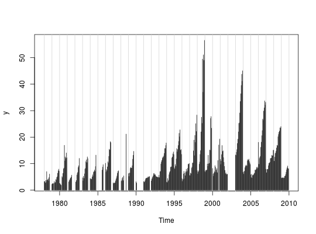

First aggregates multivariate matrix time series by year. Then converts to a vector time series in which “seasons” correspond to these annnualized values for the original variables.
mts2ts(x, seas = 1:frequency(x), na.rm = FALSE)
| x | An object of class "mts" |
|---|---|
| seas | Numeric vector of seasons to aggregate in original time series. |
| na.rm | Should missing data be ignored when aggregating? |
A vector time series
The seas parameter enables focusing the subsequent analysis on
seasons of special interest, or to ignore seasons where there are too many
missing data. The function can be used in conjunction with seaKen to
conduct a Regional Kendall trend analysis. Sometimes just plotting the
resulting function can be useful for exploring a spatial transect over time.
## Quick plot a spatial transect of chlorophyll a during the ## spring bloom period (Feb-Apr) for each year. y <- mts2ts(sfbayChla, seas = 2:4) plot(y, type = 'n')abline(v = 1978:2010, col = 'lightgrey')lines(y, type = 'h')